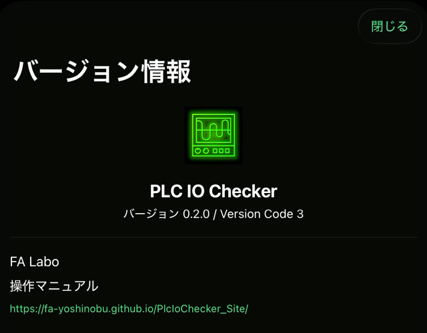

不具合確認
発生した操作、エラー履歴、PLC 機種、接続方式とあわせて、アプリのバージョンを確認します。
Version Info
アプリのバージョン、公開状態、関連するリリース情報を確認します。サポート問い合わせ時にも確認しておく項目です。

発生した操作、エラー履歴、PLC 機種、接続方式とあわせて、アプリのバージョンを確認します。
使用中のバージョンとリリースノートを見比べ、修正済みの内容や既知の制限がないか確認します。
実機通信の制限や購入状態は ライセンス/購入 で確認します。
正式公開前のため、公開バージョン、公開日、ストア URL は確定後に追記します。変更履歴は リリースノート にまとめます。